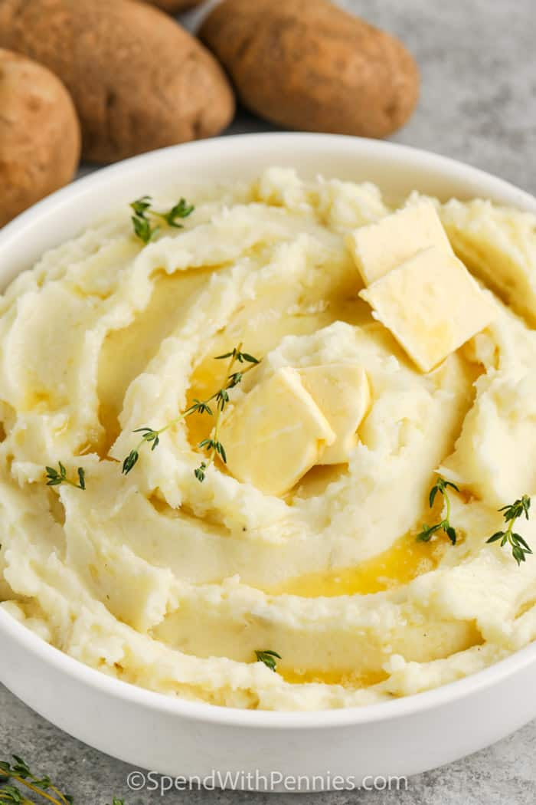

Mashed Potatoes
About this Recipe

This is a recipe my boyfriend loves. They are super buttery, super creamy, deliciously salty and peppered mashed potatoes. These potatoes are perfect for pairing with bangers and mash, as a substitute for bread for a soup, or even to have on the side of the mushroom stroganoff.Here's how you make it
Ingredients
- 6 large yellow potatoes
- 1/4 square of salted butter
- Salt and pepper to taste
Steps
- The first thing to do is to wash, peel and cut your potatoes into large square cubes
- Once washed, peeled and cut, drop your potatoes into boiling water
- The key to this recipe is to over cook the potatoes, to the point where they are falling apart on the fork when you test them. This norally takes 15 minutes for me
- Once perfectly overcooked, drain the potatoes and while they are still hot, put them back into the pot with the butter and begin mashing and stirring
- Once mashed, stirred and creamy, add in any extra salt and pepper, and enjoy!